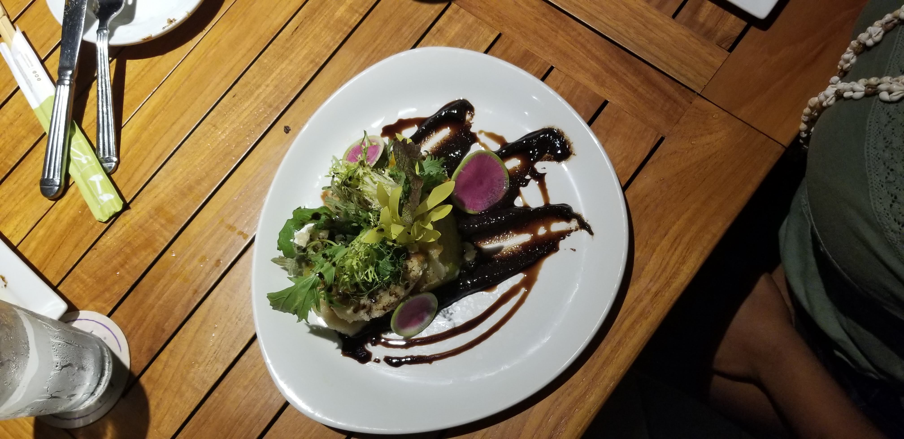
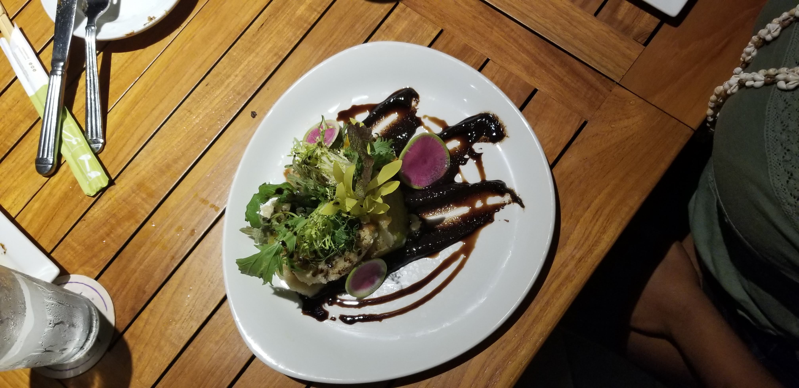

What We Ate

 

Where We Visited
Valley of the Temples
Oahu's Valley of the temples, also known as the Byodo-In Temple, was built to pay tribute to the first Japanese immigrants who arrived in Hawaii.
The original temple was built in Japan using wood, while the temple in Hawaii is made with mostly concrete.
It is such a beautiful tribute and reminder of how many people fight to uphold the beauty and culture of their land.
There you will find ponds filled with huge koi fish with the opportunity to feed them.
The building is so peaceful, and everyone who visited could feel the tranquility brushing over them as they ventured through its halls and trails.
Click photo to learn more.

Laniakea Beach
Laniakea Beach, also known as Turtle Beach, is known for its large population of green turtles.
It is not uncommon to dip your toes in the water and find a turtle swimming right by you.
If you do find yourself close to one, it is best to keep a safe distance from them as they are not to be disturbed.
The beach itself is a very calm setting that is sure to relax anyone who decides to go.
Click photo to learn more.
Waimea Valley
Paragraph about attraction
Click photo to learn more.